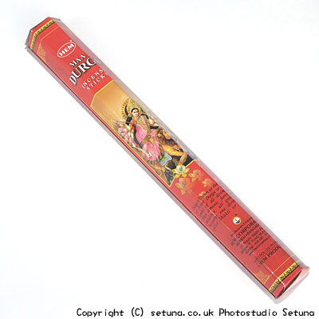

部屋に女神様が舞い降りて来た・・・一言で云えばそんな感じでしょうか。
置いておくとうっすらと甘めの柑橘系の香りで部屋中が満たされます。
近くで嗅いでもやっぱり柑橘系ですね、いい香りです。
火を点けるとタンジェリンのような香りがぱっと広がります。
燃え進むにつれてローズマリー、白檀、ヘナと言った香りもちらほらと顔をのぞかせます。
何ともエキゾチックでゾクゾク(?)するような香りです。
そんな風な香りたちが部屋の下の方から中ほどにかけてしっとりと落ち着く様に香り続け、上の方で甘い柑橘系がふんわりと香ります。
焚き終わりもゴージャスでスパイスとタンジェリンの甘く爽やかで、しっとりとした香りが長く長く強めに残ります。
ついついうっとりして手を止めてしまい、浸ってしまう大好きなお香です。
